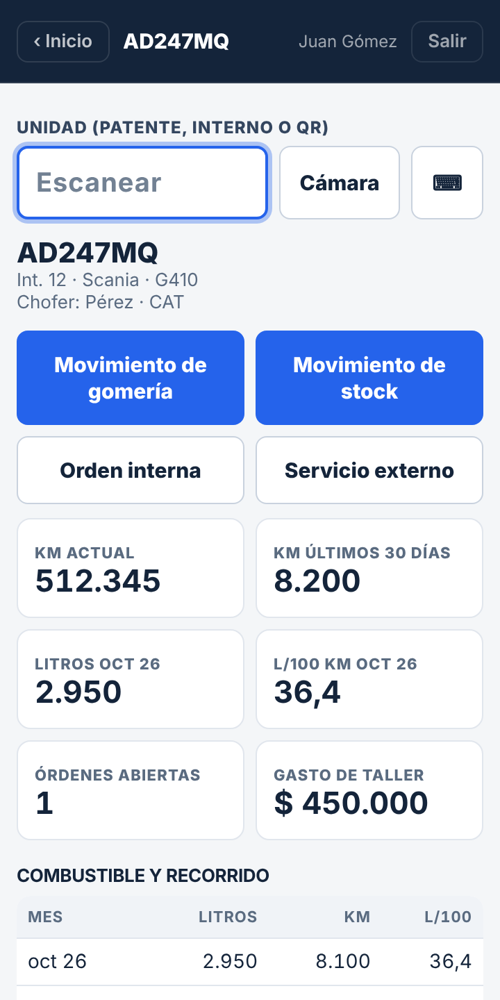
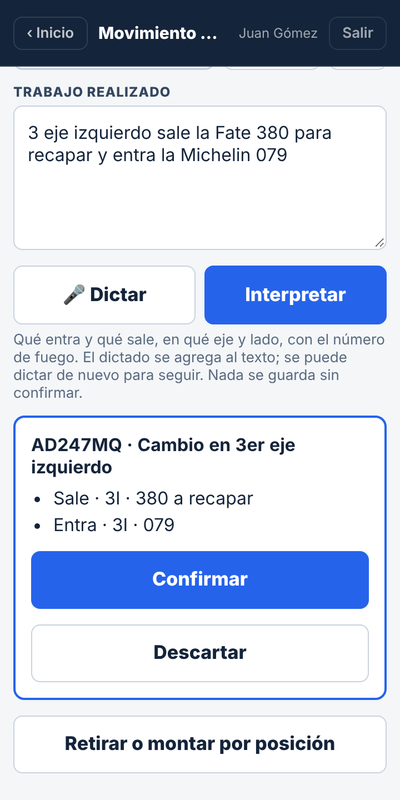
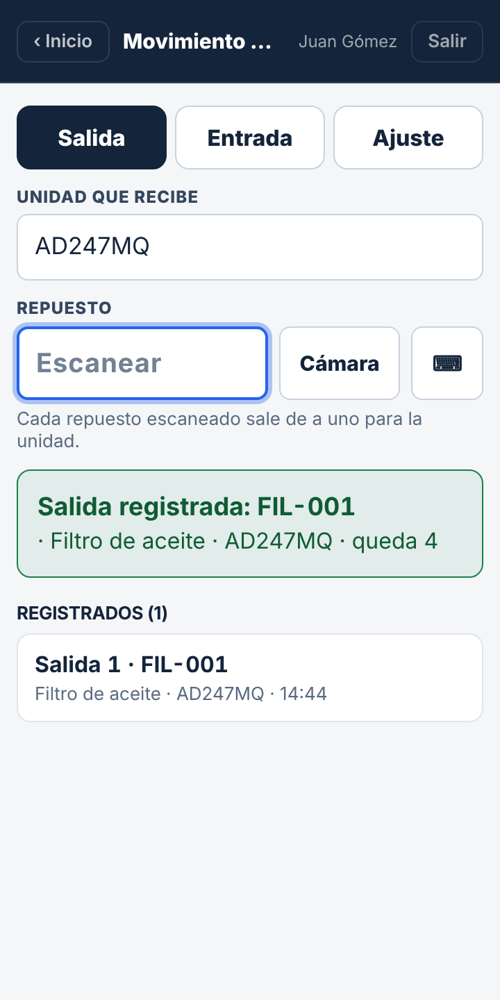

Instructivo · TallerHandheld y celular

Todo empieza por el QR del camión.Escanear la etiqueta pegada en la unidad abre su registro: datos, gomería y stock.
1
Escanear la unidad
Apuntar al QR y apretar el gatillo. Con celular: botón Cámara.

2
Movimiento de gomería
Escribir o tocar 🎤 Dictar. Después Interpretar y Confirmar.

3
Movimiento de stock
En Salida, escanear cada repuesto: sale de a uno para esa unidad.

Sin QR a mano: tocar ⌨ y escribir la patente, después la flecha del teclado.
Nada se guarda en gomería sin tocar Confirmar.
Entrada de repuestos: elegir Entrada, escanear y poner la cantidad.
Otro usuario: Salir, arriba a la derecha.
Celular: entrar a app.titanfleetmanagement.com y «Agregar a pantalla de inicio».
Orden interna o servicio externo: desde el registro de la unidad.
Titán Flota · Tallerapp.titanfleetmanagement.com